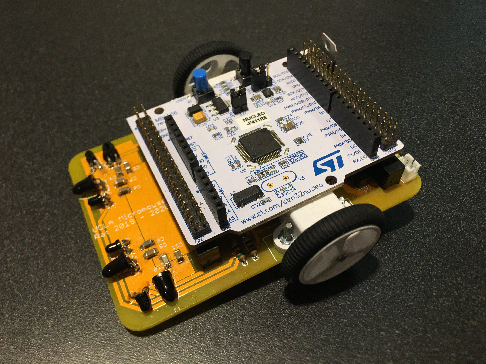

Micromouse
Micromouse is an event where small robot mice solve a 16×16 maze. I first heard about it in high school, but only started in college after joining the UCLA IEEE club. Micromice autonomously navigate from the start of the maze to the center using sensors to map out walls and paths. Common sensors used on Micromice include encoders for measuring wheel movements, IRs for detecting walls, and gyroscopes for measuring rotations. Additionally, advanced mice incorporate mechanisms such as suction fans for greater normal force and maximum potential acceleration.
I have built two mice so far. The first one, a "rat," is a proven design provided by the Micromouse instructors in UCLA IEEE which allowed new Micromousers such as myself to learn the fundamentals. It is based off an ST Nucleo F411-RE development board and has a full sensor setup including four IRs and two encoders.
{kind=link}
The second mosue I have worked on is a custom design using the STM32F405RGT6 chip. It was designed with Autodesk Eagle; programming is done in the STM32 CubeIDE environment. It has six IRs, two encoders, and a gyroscope. By adding two more IRs pointing diagonally, the mouse can detect openings in walls in advance.